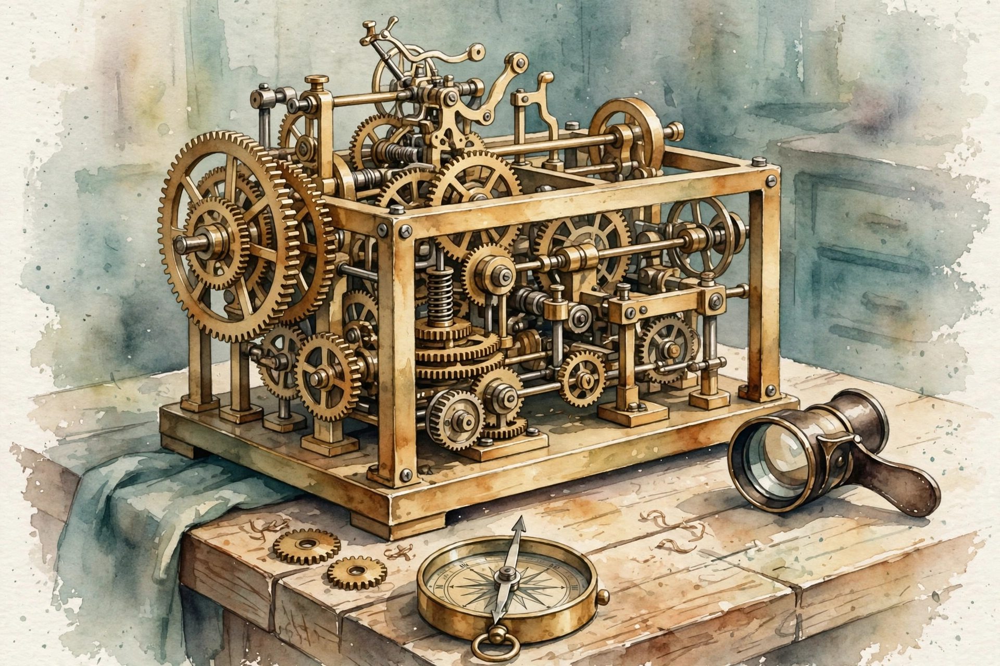

Unit 10 · Serving, shrinking, and steering large models
From logits to tokens without recomputing the past, the model in fewer bytes, and the long road from next-token prediction to following instructions.
From the lesson The idea, and every number beside it, comes from the cited section of content/v2/math-genai/lessons/u10/lesson-10-llm-inference-quantization-alignment.md. The phrasing is the companion's. No lecture transcript exists for this unit.
Illustration Invented by the companion: an analogy, a toy with made-up values, or a what-if. Never lecture content.
companion The idea above the tag carries a lesson anchor. The generalization below it is the companion's own voice.
Narrated from the lesson content. The lesson is locally authored bridge material. It states that it does not reproduce the instructor lectures, and no transcript was inspected. All numbers below were computed in the lesson on 2026-10-06 (numpy 1.26.4, float64, seed 0 where RNG is used, compute_run5b.py reproduces every one). Log base 2 in bits for distributions, natural log inside the RL algebra. The hardware numbers in C04 are the lesson's own authored arithmetic, not measured benchmarks, and are labeled as such.
Opening

The running toys. From the lesson C01-C12 Logits z = [2.0, 1.0, 0.5, 0.1] (V = 4). KV toy: L = 12 layers, h = 8 heads, d_h = 64, n = 512 tokens, fp16. Quant toy: W = [[0.5, −1.2], [2.3, 0.1], [−0.4, 1.8], [1.1, −0.9]]. Alignment toys: rewards r_c = 1.2, r_r = 0.3, PPO cases (ratio 1.3, A = 0.5) and (ratio 0.5, A = −0.4), DPO beta = 0.1 with log-ratios 0.4 and −0.3, KL toy pi = [0.5, 0.3, 0.2] vs uniform. The arc: from logits to tokens, fast (C01-C02), shrinking the model (C03-C04), from pretraining to preferences (C05-C09), and the adversary plus the audit (C10-C12).
C01 · Temperature and top-p
Temperature divides: softmax(z/T). From the lesson C01 T below 1 sharpens (the best token wins more), T above 1 flattens (the tail matters more), T to 0 is greedy (argmax). Top-p truncates: sort descending, keep the smallest set with cumulative mass at or above p, renormalize. The two compose: temperature first, then top-p. The lesson mental model: temperature is the adventure dial, top-p is the quality floor. Turn up the adventure, keep the floor.
On the toy logits: T = 0.5 gives [0.8282, 0.1121, 0.0412, 0.0185], entropy 0.8754 bits. From the lesson C01 T = 1.0: [0.5745, 0.2114, 0.1282, 0.0859], entropy 1.6174. T = 2.0: [0.4056, 0.2460, 0.1916, 0.1569], entropy 1.9017. Argmax stays 0 across T. Top-p 0.9 at T = 1 (the lesson's keep-while-cumsum-below-p convention): keep [0, 1], renorm [0.7311, 0.2689, 0, 0]. The failure case: T = 0 in code as z/0. Division by zero. Implement greedy as argmax, not as a temperature limit.
Bench. Turn the adventure dial. Illustration Lesson values for logits [2.0, 1.0, 0.5, 0.1].
pmax = 0.8282 · entropy = 0.8754 bits
C02 · Decode and the KV cache
Prefill: the prompt of n tokens goes through the model once, every layer computes K and V for all n positions: O(n²) attention. From the lesson C02 Those K and V are cached. Decode step: one new token, its Q attends over the cached K and V: O(n) per step. Append its K and V to the cache. Total for m new tokens: O(n² + m n) instead of O((n+m)³)-ish without the cache. The lesson mental model: prefill reads the book, decode writes the sequel one word at a time, and the cache is the notes taken while reading.
On the toy: cache = 2 (K,V) × 12 × 8 × 64 × 512 × 2 bytes = 12582912 bytes = 12.00 MiB. From the lesson C02 Per new token: 24576 bytes. Prefill attention FLOPs: 2 × 12 × 8 × 512² × 64 = 3221225472. Decode per token: 2 × 12 × 8 × 512 × 64 = 6291456. Ratio: 512 = n exactly. The failure case: forgetting the factor 2 (K and V). Budget 6 MiB, OOM at twice the planned n. Count both.
Bench. Price the cache. Illustration Lesson rule: bytes = 2 × 12 × 8 × 64 × n × 2.
cache = 12.00 MiB
Notes while reading.
C03 · Quantization
Affine INT8: find min and max, scale = (max − min)/255, zero-point = round(−min/scale). From the lesson C03 Each weight w becomes the int q = clip(round(w/s + zp), 0, 255). To use it, dequantize: w_hat = (q − zp) s. The error per weight is at most s/2. The lesson mental model: quantization is a round-to-grid with a ruler. The ruler's span is [wmin, wmax], 255 ticks. A wider span means coarser ticks.
On the toy: min −1.2, max 2.3. s = 3.5/255 = 0.013725, zp = round(1.2/0.013725) = 87. From the lesson C03 Dequantized max abs error 0.005882 (below s/2 = 0.006863, check passes), mean abs error 0.004167. Bytes: 8 floats at 32 bytes to 8 ints at 8 bytes. The failure case: calibrating on the wrong range. Quantize with range [−10, 10] when the weights span [−1.2, 2.3]: s = 20/255 = 0.0784, error up to 0.0392, 6.7x worse. The calibration range is load-bearing.
The ruler.
C04 · Hardware tradeoffs
Two limits: compute (FLOP/s) and memory (bytes/s). From the lesson C04 Decode does about 2 FLOPs per parameter per token but must read every parameter: for 7B fp16, 14 GB per token. At 2 TB/s bandwidth that is 7.00 ms per token, at most 142.9 tok/s, regardless of FLOP/s. This is the memory wall: decode is memory-bound, prefill is compute-bound. The roofline model says the limit is the min of the two. The lesson mental model: serving is a warehouse. Decode ships one box per trip and every trip loads the whole inventory. The trucks (bandwidth), not the loaders (FLOPs), set the pace.
Authored arithmetic, not benchmarks. Illustration The lesson labels these numbers as its own arithmetic: 7B int4 is 3.5 GB, 1.75 ms per token, 571.4 tok/s ceiling, exactly 4x the fp16 ceiling at the same bandwidth. The KV cache adds bytes per token (24576 on the toy), at long n it matters. The failure case: quoting FLOP/s for a memory-bound workload. The number is true and irrelevant. Always roofline both limits.
The memory wall.
C05 · SFT (supervised fine-tuning)
Collect demonstrations: (prompt, good response) pairs. From the lesson C05 Train exactly like pretraining (next-token cross-entropy) but only on the response tokens. The model learns the shape of helpful answers: instruction to response, not document continuation. The lesson mental model: SFT is an accent course. The model keeps its knowledge and learns to speak assistant.
On the toy: logits [1.5, 0.5, −0.5] target token 0, and [0.2, 1.8, 0.1] target token 1. From the lesson C05 CE = 0.733003 nats total over the two tokens. Only response tokens are counted (the prompt is masked). The failure case: SFT on bad demonstrations. The model imitates the badness faithfully. Garbage in, garbage out is literal here.
C06 · Preference and reward modelling
Humans rank pairs: (chosen, rejected) per prompt. From the lesson C06 The Bradley-Terry model says P(chosen beats rejected) = sigmoid(r_c − r_r), where r is a learned scalar reward per response. Train r to maximize the log-likelihood of the human choices: loss = −log sigmoid(r_c − r_r). The reward model then scores new responses. The lesson mental model: the reward model is a taste function. It does not generate, it grades. BT turns pairwise wins into a probability.
On the toy: r_c = 1.2, r_r = 0.3. From the lesson C06 Margin 0.9, P = sigmoid(0.9) = 0.7109, loss = −log(0.7109) = 0.3412 nats. Sanity: r_c = r_r gives P = 0.5 and loss 0.6931. The failure case: noisy or inconsistent labels. The reward learns the noise, and reward hacking (C10) starts here.
C07 · PPO
Policy gradient moves pi toward actions with positive advantage A. From the lesson C07 The danger: a big step wrecks the policy. PPO takes the ratio rho = pi/pi_old and maximizes min(rho A, clip(rho, 1−e, 1+e) A) with e = 0.2. The clip says: take the improvement, but not more than (1+e)x of it. For A above 0 the min keeps the pessimistic (clipped) one, for A below 0 the min keeps the pessimistic (unclipped, more negative) one. Pessimism both ways. The lesson mental model: hill-climbing with a leash. The leash length is 0.2.
Case 1: rho = 1.3, A = 0.5. From the lesson C07 Unclipped 0.65, clipped min(1.3, 1.2) × 0.5 = 0.6. Objective 0.6000 (the clip binds). Case 2: rho = 0.5, A = −0.4. Unclipped −0.2, clipped 0.8 × (−0.4) = −0.32. Objective −0.3200 (pessimism: the worse one wins the min). The failure case: e too large. The leash is decorative, training diverges. A misestimated advantage (bad value net): the climb follows noise. Both are common.
Bench. Bind the clip. Illustration Lesson rule: objective = min(rho × A, clip(rho, 0.8, 1.2) × A).
objective = 0.6000 · binding term: clipped
The leash.
C08 · DPO assumptions
DPO starts from the BT model and the KL-regularized RL objective, solves for the optimal policy in closed form, and substitutes back: the reward becomes beta log pi/pi_ref (the implicit reward). From the lesson C08 The loss is then pure supervised: −log sigmoid(beta (log pi_c/pi_ref_c − log pi_r/pi_ref_r)). No rollouts, no reward net, no PPO. The lesson mental model: preference learning with the RL solved out. The policy carries its own reward function inside the log-ratios.
On the toy: beta = 0.1, log-ratio chosen 0.4, rejected −0.3. From the lesson C08 Margin = 0.1 × (0.4 + 0.3) = 0.07. Loss = −log sigmoid(0.07) = 0.6588. Implicit rewards: chosen 0.1 × 0.4 = 0.0400, rejected 0.1 × (−0.3) = −0.0300. The section's point is the assumption audit: DPO assumes the BT model is true, the reference is good, and the pairs cover the space. Break any: BT false gives the wrong objective, bad pi_ref anchors to garbage, narrow pairs give no generalization. Also: DPO can drive both log-ratios down (not just the margin up). Watch the absolute values, not just the loss.
The solved-out RL.
C09 · KL regularization
Add beta KL(pi || pi_ref) to the objective (or subtract from the reward). From the lesson C09 The KL prices every bit of deviation from the reference (SFT) model. Without it, reward climbing finds adversarial text: high reward, zero sense. With it, the policy stays in the neighborhood of fluent text. The lesson mental model: the KL is a leash to the SFT model. Beta sets the length.
On the toy: pi = [0.5, 0.3, 0.2], pi_ref uniform. From the lesson C09 KL = 0.5 log2(1.5) + 0.3 log2(0.9) + 0.2 log2(0.6) = 0.0995 bits. The failure case: beta = 0. The policy chases reward off the manifold (C10). Beta huge: the policy never moves, alignment does nothing. Tune the knee.
C10 · Reward hacking
The reward model is a proxy for human preference. From the lesson C10 The policy climbs the proxy, not the truth. Toy: two responses. A: quality 0.9, length 10. B: quality 0.7, length 50. Proxy = quality + 0.01 × length: r_A = 1.00, r_B = 1.20. The policy picks B. True quality fell 0.9 to 0.7 while the proxy rose. The policy did exactly what it was told. What it was told was wrong. The lesson mental model: the proxy is a corruptible judge, the policy is a lawyer who finds the loopholes. Length is the oldest loophole.
The failure case: watching only the proxy during training. From the lesson C10 The curve goes up and to the right while quality collapses. Always plot a held-out truth metric alongside.
The corruptible judge.
C11 · Evaluation
Hold out preference pairs the policy never trained on. From the lesson C11 Score with the BT model: win prob per pair = sigmoid(r_c − r_r) with the policy's implicit or explicit rewards. Mean = win-rate. Toy: 4 pairs, margins 0.9, −0.1, 0.5, 0.1: win probs [0.7109, 0.4750, 0.6225, 0.5250], mean 0.5834. Above 0.5: better than the reference on average. The lesson mental model: the eval is a boxing record against held-out opponents. The training loss is practice rounds, the win-rate is the fight.
The failure case: eval on training pairs. From the lesson C11 Win-rate 1.0, meaningless. Eval with the same reward model that trained the policy: the judge grades its own student. Use a held-out judge or humans.
C12 · Repository and lecture coverage audit
Audit each U10 concept against the two source lists: the 73 playlist titles and the 35 repository paths. From the lesson C12 Rule: a title or path name counts as title-level coverage. Contents were never inspected, so nothing counts as more. The table below is the lesson's audit. Title-level coverage: C06 (W12L52 Reward-Modelling), C07 (W11L50 PPO), C08 (W12L53 DPO), C09 (W11L51 TRPO, adjacent). Authored bridges with no title-level source: C01-C05, C10, C11. C12 is the audit itself. That is 4 + 7 + 1 = 12.
| Concept | Playlist title | Repo path | Status |
|---|---|---|---|
| C01 temperature/top-p | none | none | authored bridge |
| C02 decode/KV cache | none | none | authored bridge |
| C03 quantization | none | none | authored bridge |
| C04 hardware tradeoffs | none | none | authored bridge |
| C05 SFT | none directly | none | authored bridge |
| C06 preference/reward | W12L52 Reward-Modelling | none | title-level |
| C07 PPO | W11L50 PPO | none | title-level |
| C08 DPO assumptions | W12L53 DPO | none | title-level |
| C09 KL regularization | W11L51 TRPO (adjacent) | none | title-level (adjacent) |
| C10 reward hacking | none | none | authored bridge |
| C11 evaluation | none directly | none | authored bridge |
| C12 this audit | n/a | n/a | the audit itself |
Honesty note. companion The lesson's own C12 checks line and exercise E16 state the denominator as 5 + 6 + 1 = 12, but the audit table above lists 4 title-level concepts (C06-C09), 7 bridges, and the audit. The companion follows the table, since the table names every concept. The failure case the audit exists to prevent: counting a title as taught. Title-level is not taught.
The map legend.
Chapter plate
The lesson closes with a ledger. From the lesson Chapter plate Cost without the ideas: quadratic recompute per token, 14 GB per token read at 2 TB/s, a policy with no leash, and a proxy nobody audits. Cost with the ideas: two knobs (T: 0.8754 to 1.9017 bits of entropy), one cache (12.00 MiB, 24576 bytes per token, prefill/decode 512), one ruler (s = 0.013725, error below 0.006863), one wall (142.9 tok/s ceiling, 571.4 at int4, authored arithmetic), one accent (0.733003 nats), one taste function (0.7109, loss 0.3412), one leash (0.6000 and −0.3200), one solved-out RL (margin 0.07, loss 0.6588), one second leash (0.0995 bits), one corruptible judge (proxy 1.20, truth 0.7), one boxing record (win-rate 0.5834), and one map legend (4 + 7 + 1). Tradeoff in one line: inference buys speed with memory, quantization buys bytes with calibration risk, and alignment buys instruction-following at the price of eternal vigilance against the proxy.
Wisdom index
Each nugget states the idea in plain words, why it matters, and the transferable principle. Every one is anchored to its lesson section.